MemoryOS×mem0
两个跨 AI 记忆产品的对比分析
它们看起来都在做"帮 AI 记住你"，
但 mem0 在记住你是一个什么样的人，
MemoryOS 在记住这件事是怎么一步步做到现在的。
三个关键发现基于亲手使用。
mem0 说的“跨平台同步”，实际是断开的。
我从三个不同入口（Chrome 插件 / 网页后台 / 开发者工具）写入的记忆，互相看不到。同一个用户的记忆被拆成了三份，普通用户无法合并。
展开看实测证据（2 张截图）
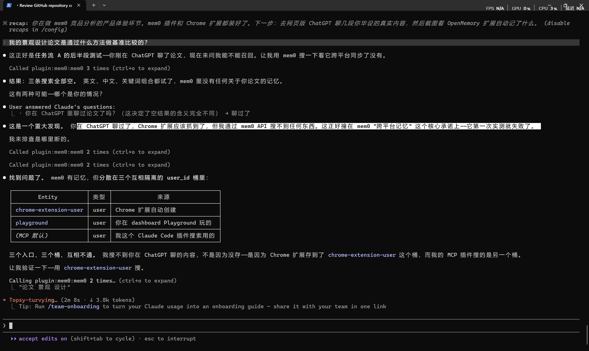
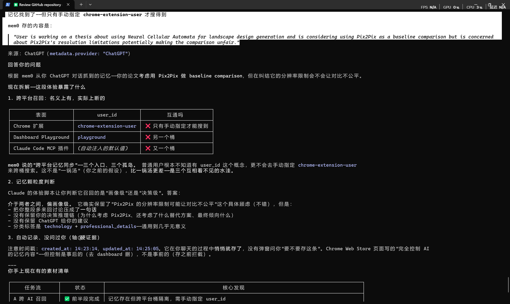
AI 平台自带的记忆正在取代第三方工具。
Claude 直接忽略了 mem0 提供的信息，用自己记住的内容回答了一个更详细的答案。第三方记忆工具的空间正在被压缩。
mem0 正在放弃"数据在用户自己电脑上"。
本地部署版本已标注即将停用，全面转向云端。MemoryOS 可以继续坚持做本地APP这条路。
后续优化：把 MemoryOS 的定位从"跨 AI 记忆工具"调整为"跨 AI 工作记录"，与 mem0 的"个人画像记忆"明确区分。资源集中在 mem0 做不到的两件事上：按项目整理记录 与 每条记录可追溯来源。
不同的市场&赛道做"AI 记忆"的产品很多，但需要先分清楚。
MemoryOS 真正的竞争区域
- mem0 OpenMemory 浏览器插件 — 和 MemoryOS 解决的问题几乎一样，最直接的对手
- ChatGPT / Claude / Gemini 自带的记忆功能 — 只对自家 AI 有效，无法跨平台
- MemoryOS — 桌面应用，本地优先，按项目记录
mem0 的核心业务在这一层
- mem0 — 记忆接口（核心）
- Supermemory · Letta · Zep
- 这一层不是 MemoryOS 的竞争区域
值得注意的一点 —— OpenMemory 浏览器插件就是 mem0 公司做的。一家拿了投资的技术公司，从底层接口往上延伸做了面向普通用户的产品。它带着成熟的技术和资金，直接进入了 MemoryOS 所在的市场。
但反过来看，mem0 的基因是技术工具，面向普通用户的产品是后来加的。这个基因差异影响了它的产品体验 — 后面会详细展开。
它们其实在解决不同的问题先把基本信息摆清楚，再讨论差异。
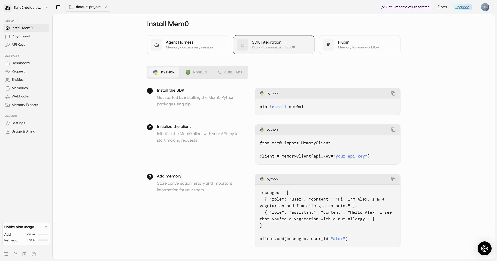
点击放大浏览器插件，自动记住你在不同 AI 里聊过的内容。
- 主要产品
- Chrome 浏览器插件 + 开发者接口 + 网页管理后台
- 工作方式
- 安装插件后，你在 ChatGPT / Claude 等 AI 里聊天，插件自动提取关键信息并保存到云端
- 支持 AI
- ChatGPT / Claude / Gemini / Perplexity（自动识别）
- 数据存放
- mem0 的云端服务器
- 价格
- 免费版 10,000 条记忆，付费版更多

{kind=link}
{kind=link}
{kind=link}
从解决的不同问题看出核心区别从解决的不同问题看出核心区别。后面所有产品差异，都从这里长出来。
"每次换一个 AI，
它都不认识我，
我要重新自我介绍。"
- 记什么
- 关于你这个人的基本信息（职业、偏好、习惯）
- 比方
- 像一张随身名片，让每个 AI 都认识你
- 用户角色
- 被动 — 安装插件就行，AI 自动学习你是谁
”每次开新对话，
上次做到哪了 / 为什么这么决定的，全忘了。”
- 记什么
- 你在某个项目里的工作进展和关键决定
- 比方
- 像一本工作日志，记录每个项目的来龙去脉
- 用户角色
- 主动 — 你来决定记什么，代价是每次都要手动操作
MemoryOS 记住事情怎么一步步走到这里。
用户完全可以同时用两个 — 用 mem0 让 AI 知道"我是一个景观设计师，偏好简洁的沟通方式"，用 MemoryOS 记录"毕设第五章为什么砍掉了云端方案"。
MemoryOS 不需要打赢 mem0，而是把自己的定位讲清楚。
用户不一样，结论才成立两个产品服务的人群不同，所以前面说的所有差异不是"谁更好"，而是在哪些方面有优势。
日常 AI 使用者
+ 应用开发者
- 典型场景
- 希望 ChatGPT 记住"我养了一只叫布丁的猫""我写代码偏好用 Tailwind""给我的邮件用正式语气"。不需要复杂的项目管理，只想每个 AI 都认识自己。mem0 用户评价里最常见的赞美就是"终于不用反复自我介绍了"，有用户报告每周省下 2–3 小时重复输入上下文的时间。
- 使用频率
- 每天和 AI 聊几句到几十句，话题零散，不需要追溯上周聊了什么。
- 对摩擦的容忍度
- 极低。多一步操作就会卸载。所以 mem0 选择"全自动、装上就忘"是对的 — 这群用户不会也不该手动整理记忆。（有趣的是，即便 mem0 已经做到了高度自动化，Chrome 商店评分也只有 3.7/5 — 部分用户仍然觉得记忆管理不够省心。）
管着复杂项目的
重度知识工作者
- 典型场景
- 一个研究生连续三周用 Claude 和 ChatGPT 推进论文，每次开新对话都要花 10 分钟重述上次做到哪了；一个产品经理跨五个 AI 工具管着三个并行项目，决策记录散落在各处。
- 使用频率
- 每天在 AI 上深度工作数小时，同一个项目跨越数周甚至数月，上下文连续性是刚需。
- 对摩擦的容忍度
- 较高。他们愿意花 30 秒确认一次记录，换来的是下次开对话不用重述 10 分钟背景。对他们来说，手动确认不是负担，是"确保 AI 记对了"的安全感。
这不是因为日常场景不重要，而是因为 MemoryOS 本来就不是给日常聊天设计的 —
在日常场景下，mem0 的"装上就忘"体验确实更好。
这个分层决定了后面所有对比的阅读方式：两者都是在某个维度上占据优势，没有脱离用户群体的绝对优劣。
产品特性与差异拆解"记 人" vs "记 事"，直接决定了在四个方面做出相反的选择。
差异 ① 自动记录 vs 用户确认
个人信息（"我住在伦敦"）是简单事实，机器提取很准；工作决策（"选方案 A 是因为时间不够"）需要判断，自动提取容易抓偏。
怎么做的
MemoryOS 怎么做的
差异 ② 云端 vs 本地
mem0 曾经有可以部署在用户自己电脑上的版本，但最近已标注"即将停用"，全面转向云端 — 这条路 mem0 在主动退出。
怎么做的
MemoryOS 怎么做的
差异 ③ 使用成本
mem0 花钱省用户力气，MemoryOS 花用户力气省钱。哪个更好取决于用户是谁。
怎么做的
MemoryOS 怎么做的
差异 ④ 记录怎么整理
mem0 不只是"没帮用户分好项目" — 它自己三个入口写入的记忆互相都看不到。技术上完全有能力把记忆按项目整理好，差异在谁来承担整理的工作。
怎么做的
MemoryOS 怎么做的
用真实工作内容测试 mem0围绕三个使用场景，每个场景检验 mem0 一个核心宣传点是否兑现。
在不同 AI 之间延续对话
先在 ChatGPT 里聊我论文的研究方法（Neural Cellular Automata + Pix2Pix 对照），聊几轮。然后关掉 ChatGPT，打开 Claude，问"我论文的基准比较方法是什么"。检验 mem0 宣传的"跨 AI 对话连续性"。
（说明：这个测试用的是学术研究场景，属于重度知识工作。对于日常聊天场景，mem0 的自动记忆在颗粒度上可能完全够用。）
记忆跨平台保存了，但不同入口之间是断开的
浏览器插件成功从 ChatGPT 对话中抓取了一条记忆：
但当我通过另一个入口（Claude Code 的开发者工具）搜索这条记忆时，三次搜索全部返回空。原因是：浏览器插件保存的记忆和开发者工具查看的记忆，被分在了两个不相通的存储空间里。
{kind=link}
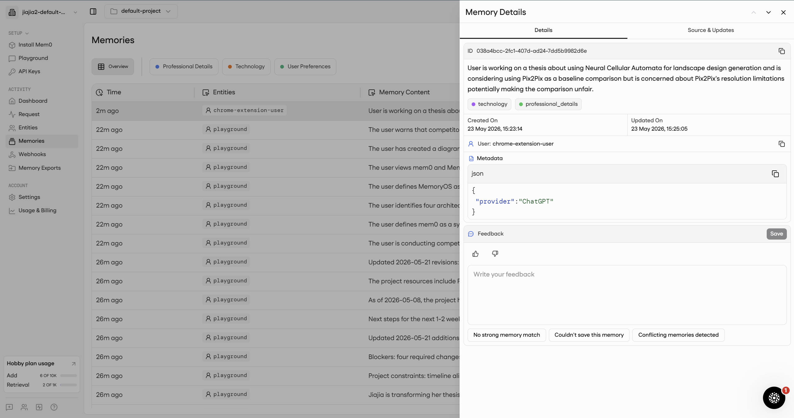
mem0 记的太粗，Claude 自己记的更详细
| 来源 | 回答内容 | 详细程度 |
|---|---|---|
| mem0 记住的 | "在做景观论文，考虑用 Pix2Pix 做对照" | 一句话概括 — 知道你在做什么，不知道具体怎么做的 |
| Claude 自记 | SuRF-UK 评估框架 · CL:AIRE 标准 · 三层评估结构 · 7 种修复策略 · 15 项可测指标 · 分区比例（DECAY 19.6% / REUSE 65.4% / REWILD 15.0%） | 完整方法论 — 不只知道做什么，还知道怎么做的 |
Claude 直接忽略了 mem0 提供的信息，用自己记住的内容给了一个详细得多的回答。
{kind=link}
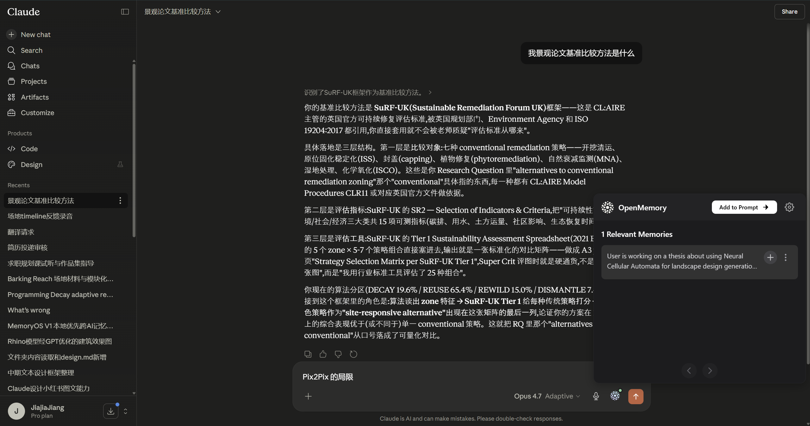
这说明两件事：mem0 的记忆提取是"简单概括"，适合记住个人偏好，不适合记需要细节的工作内容；当 AI 平台自己的记忆功能变强了，第三方记忆工具提供的信息反而会被忽略 — 这对所有第三方记忆产品（包括 MemoryOS）都是一个需要关注的趋势。
记忆加载速度慢
在 Claude 端，mem0 的浏览器插件显示"正在加载记忆…"，体感等待明显。对于一个宣传"无缝衔接"的产品，这个延迟影响了使用感受。
{kind=link}
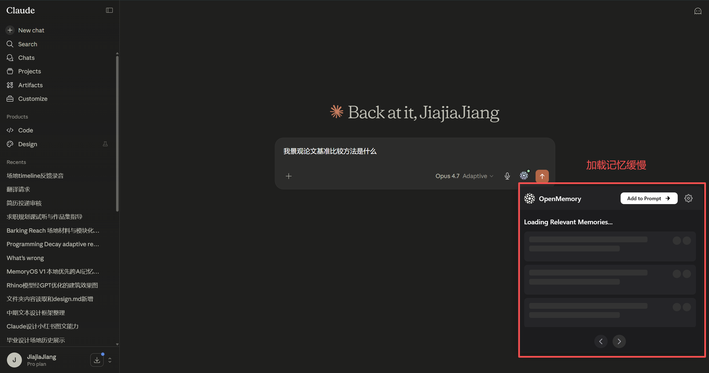
注入方式的技术问题
mem0 把记忆信息以纯文本形式插入到用户发送的消息里，AI 可以选择使用也可以选择忽略。而且同一条记忆被重复插入了两次 — 这是一个产品 bug。
查看记忆是怎么被整理的
在 mem0 的在线测试区（Playground）分别聊两个不同话题（论文 + 竞品分析），然后去管理后台看记忆列表。检验 mem0 的"掌控你的 AI 记忆"宣传点。
所有记忆混在一个列表里
两个完全不同的话题（论文研究 vs 竞品分析）的记忆，加上浏览器插件从 ChatGPT 抓的记忆，全部混在同一个按时间排序的列表里。没有按项目分开，也不能按话题筛选。
{kind=link}
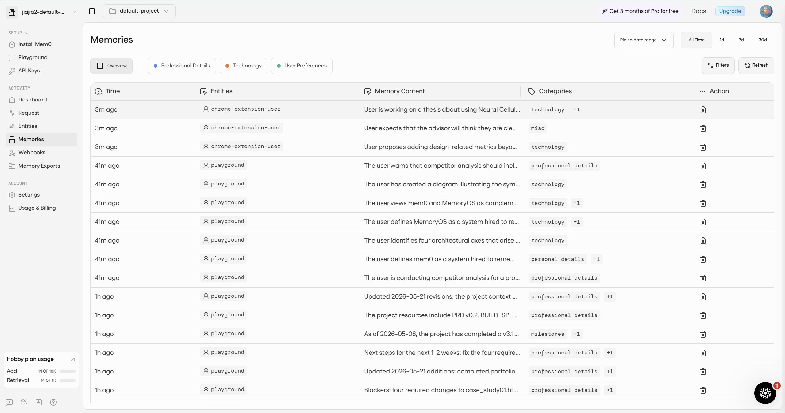
自动分类太粗
mem0 给每条记忆自动打了分类标签，但只有"技术""职业信息""个人偏好"这几个很宽泛的类别。论文和竞品分析都被归到了"技术"这个大类下面，区分不出来。
{kind=link}
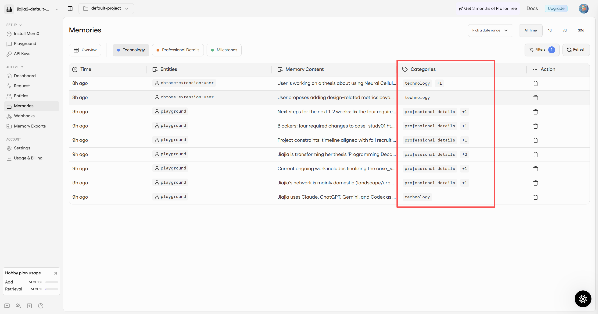
用户画像提取 — 做得比预想的好
mem0 在线测试区右侧自动从对话中整理出了一份用户画像：教育背景（UCL Bartlett）、专业方向、使用的 AI 工具、语言偏好、沟通风格等。这个功能的效果超出预期 — 它确实擅长"记住一个人是什么样的"。
但这个功能只在测试区可见，浏览器插件和开发者工具端都看不到，功能没有打通。
{kind=link}
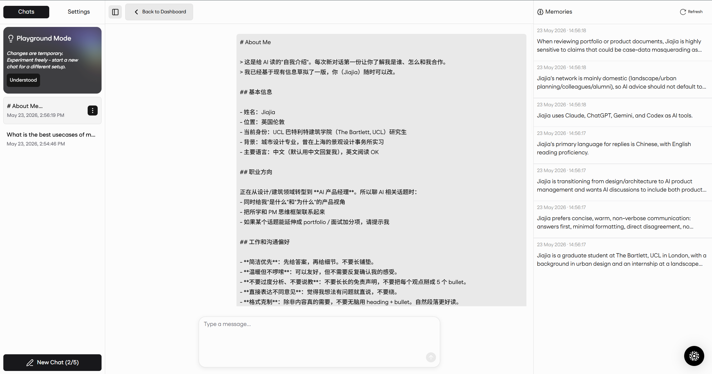
用户能不能控制什么被记住
在 ChatGPT 里正常聊天时观察浏览器插件的行为 → 在管理后台尝试删除和编辑记忆。检验 mem0 商店页的"完全控制 AI 的记忆内容"宣传语。
| 操作 | mem0 | MemoryOS | 说明 |
|---|---|---|---|
| 保存前确认 | ❌ 不支持 | ✅ 支持 | mem0 自动保存，用户没有机会事先审查 |
| 保存时通知 | ❌ 无通知 | ✅ 有通知 | 用户不知道哪句话被存了 |
| 删除一条 | ✅ 支持 | ✅ 支持 | mem0 删除不可恢复；MemoryOS 进回收站可恢复 |
| 修改内容 | ❌ 不支持 | ✅ 支持 | mem0 的记忆只能删不能改；MemoryOS 是普通文本文件，任何编辑器都能改 |
| 保存前拦截 | ❌ 不支持 | ✅ 支持 | mem0 如果记错了只能事后发现再删；MemoryOS 必须用户手动粘贴才会写入 |
{kind=link}
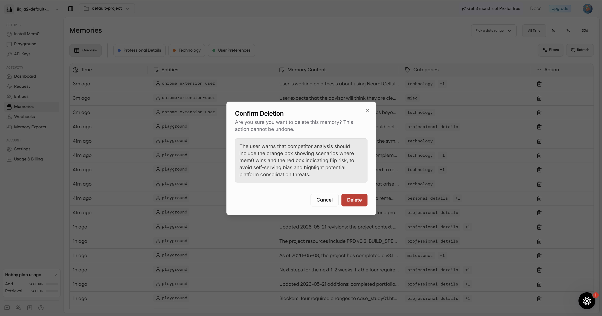
核心问题：mem0 在 Chrome 应用商店的宣传语是"完全控制 AI 的记忆内容"，但实际上用户唯一能做的控制只有事后删除 — 不能事先审查、不能修改内容、不能选择性保存。宣传和实际体验之间有明显的落差。
从开发者视角接入 mem0
为了更全面地理解 mem0，我还在 Claude Code（开发者工具）里安装了 mem0 插件并完成了全部配置。
| 观察 | 细节 |
|---|---|
| 配置步骤多 | 官方说"60 秒完成"，实际需要走 7 个步骤，包括两套独立的身份验证 |
| 只考虑 Mac 用户 | 安装指引默认你用的是 Mac 的终端，Windows 用户需要自己翻译命令 |
| 安全问题 | 指引让用户把密钥明文写进系统配置文件，不符合安全管理的基本要求 |
| 新用户第一屏 | 不是产品功能，而是代码安装指引 — pip install mem0ai |
这些细节反映了 mem0 的产品定位：它目前主要面向技术开发者，不是普通用户。从注册流程、页面措辞（"Hobby plan"）到管理后台的信息呈现方式，都假设用户是程序员。这意味着"面向普通用户的 AI 记忆产品"这个市场位，目前是空的。
{kind=link}
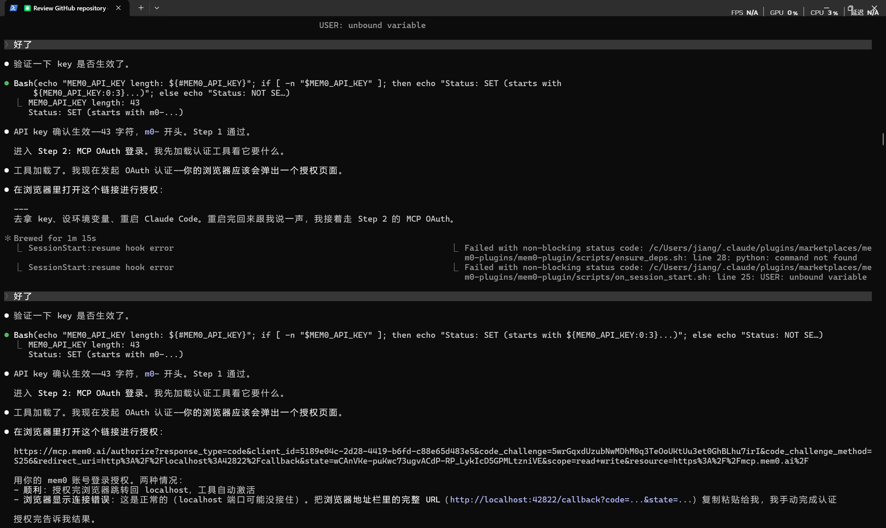
产品功能对比分析
- 让新的 AI 快速认识你 — 安装插件就自动工作
- 多台电脑切换使用 — 数据在云端
- 让 AI 应用自带记忆功能 — 提供标准化的开发者接口
- 提取用户的基本画像 — 效果不错
- 管理一个持续进行的项目 — 按项目自动分文件夹
- 需要知道"上次做到哪、为什么这么决定"
- 对数据隐私要求高 — 数据存自己电脑上
- 需要修改或整理记录 — 普通文本格式
体验前没有预判到的意外发现这些是真实使用后才知道的事情。
信息安全性存疑
竞品分析的内容，被存到了对方服务器上
我在 mem0 的在线测试区讨论 "mem0 vs MemoryOS" 的竞品对比策略时，讨论内容被 mem0 自动保存成了记忆 — 包括"MemoryOS 的定位是什么""mem0 哪里有风险"这些分析笔记。
我的竞争分析笔记，直接存在了我正在分析的那家公司的服务器上。
这个问题的根源是"自动记录、不经用户确认"的设计选择。在日常聊天中这可能只是不方便，但在敏感场景下（商业讨论、竞争分析、法律咨询），就变成了实际的安全隐患。
补充独立评测机构对 mem0 浏览器插件的隐私评分为 2/5，指出其宣传的 "local-first" 与实际的云端数据传输不符。这不是个案，是产品级的隐私设计问题。
{kind=link}
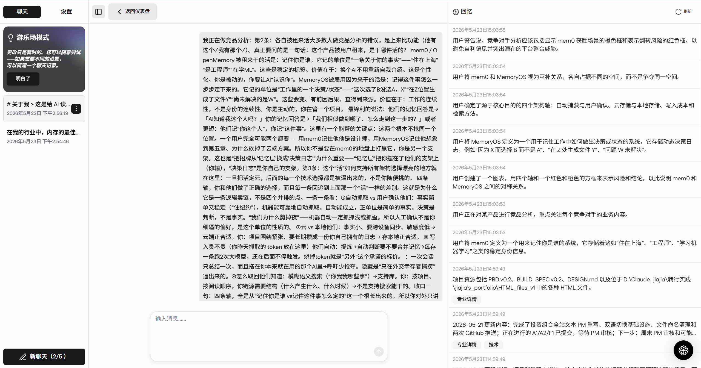
对手亮点
用户画像提取做得不错
mem0 的在线测试区能从多轮对话中归纳出相当准确的用户画像（教育背景、职业方向、工具偏好、沟通风格）。这个功能超出了我的预期 — 在"记住一个人是什么样的"这件事上，它确实做到了。
如果 MemoryOS 未来考虑增加"自动整理用户基本信息"的功能，这是一个可参考的效果标杆。
平台挤压
AI 平台自带的记忆功能正在替代第三方工具
Claude 在回答我的问题时，完全忽略了 mem0 提供的信息，转而使用了自己记住的、更详细的内容。这说明 AI 平台自身的记忆能力在快速增强。
对 MemoryOS 的启示：如果 ChatGPT 和 Claude 的自带记忆功能做到了项目级别的记录能力，那么 MemoryOS 的差异化就只剩下 "数据在本地 + 跨 AI 使用" — 需要确保这两个点足够强。
工程瑕疵
同一条记忆被重复注入
浏览器插件向 AI 提供记忆信息时，同一条记忆出现了两次。这是一个需要修复的技术问题，说明产品的工程质量还有提升空间。
战略让位
对方主动退出了"数据在用户本地"这条路
mem0 的本地部署版本已在 GitHub 上标注为 "即将停用"，正在全面转向云端。这意味着"用户的数据存在自己电脑上"这个价值主张，mem0 正在主动放弃。MemoryOS 在这条路上的竞争压力反而减轻了。
定位调整 · 资源优先级 · 不打的仗建议从"跨 AI 记忆"调整为"跨 AI 工作记录"。
本地工作记忆"
"记忆"一词太宽，容易被放在 mem0 主场比较。
工作记录"
"工作记录"更准确描述独特价值 — 不是记住你是谁，是记录事情怎么一步步走到这里的。用户一看就知道两个产品有什么不同。
给开发者
核心生意是底层记忆接口 — 开发者在自己的应用里嵌入 mem0 的记忆能力，按调用次数付费。定价四档：免费版（10,000 条记忆 / 1,000 次检索）、$19/月、$79/月、$249/月（解锁关系图谱和高级分析）。2025 年 10 月完成 $24M 融资（Series A，YC / Peak XV / Basis Set 领投），API 调用量同年从 Q1 的 3500 万次增长到 Q3 的 1.86 亿次。浏览器插件是免费的，作用是吸引开发者来用付费接口 — 插件本身不赚钱。
免费开源，数据存在用户本地，没有云端服务也就没有按量收费的基础。这是一个需要诚实面对的问题：纯本地、零成本对用户是好事，但产品要长期活下去，需要找到不依赖云端数据的收入方式 — 比如付费的高级功能、团队版、或者针对特定行业的定制服务。目前还没有答案。
这个差距是真实的：mem0 拿了 $24M 融资、API 季度调用量 1.86 亿次，MemoryOS 目前是一个人自制的 demo。但反过来看，mem0 的收入来自开发者接口，不来自浏览器插件 — 它在"面向普通用户的记忆产品"这个位置上，也还没有赚到钱。两者都还在验证阶段，只是验证的东西不一样。
把"按项目自动整理记录"做得更好
这是 mem0 做不到的事 — 它的记忆列表完全不分组，是 MemoryOS 最核心的差异化。
保证不同入口写入的记录统一可见
吸取 mem0 三个入口互不相通的教训，避免同样的问题。
把"手动复制粘贴"的操作成本降下来
这是 MemoryOS 当前最大的体验短板。每次对话结束后要复制指令、粘贴到 AI、再把总结复制回来 — 步骤太多，日常使用不现实。如果不解决这个问题，产品只能留住最有耐心的那一小群用户。可能的方向：做成"一键同步"或者本地剪贴板监听，在不放弃"用户确认"的前提下把操作从五步减到一步。
增加"建议确认"模式
在"全自动"和"全手动"之间找到平衡 — AI 推荐要保存的内容，用户一键确认。
让用户可以直接在应用内编辑记录
mem0 的记忆只能删不能改，支持编辑是一个明确的差异化。
- 数据存在本地，不能多台电脑同步使用
- 需要用户手动复制粘贴，操作步骤比自动记录多
- 按项目分开记录的设计，跨项目搜索不太方便
- 目前是一个人开发，更新速度和稳定性有限
- 当前的"手动复制粘贴"工作流，对大多数普通用户来说操作成本过高，是产品最需要优先解决的体验问题
对策与机会点
| mem0 的选择 | MemoryOS 的做法 | 为什么是机会 |
|---|---|---|
| 记住一句话概括 | 记录完整的工作总结 | 用户需要的不只是"AI 知道我在做什么"，还需要"上次做到哪了" |
| 三个入口的记忆互相看不到 | 所有记录统一管理 | 用户不应该关心"这条记忆是从哪个入口存进来的" |
| 自动保存、不经用户确认 | 用户可以事先审查再决定保存 | 在用户还没有充分信任 AI 判断力的阶段，给用户控制权更安全 |
| 记忆只能删除、不能修改 | 数据是普通文本文件，随时可以编辑 | 记录是用户的资产，应该像笔记本一样可以修改和整理 |
| 正在退出"数据存在本地"这条路 | 坚持数据存在用户本地 | 对方主动让出的位置，竞争压力最小的差异化方向 |
| 产品定位偏向技术开发者 | 明确面向普通用户 | 从注册流程到默认页面都在说"这是给程序员用的"，普通用户的市场还是空白 |